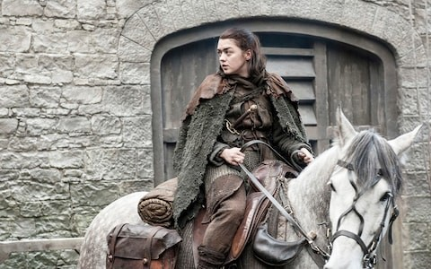

The feisty younger Stark sister, Arya saw her father beheaded and was at hand when her mother and brother (and sister-in-law) were cut down at the Red Wedding. She fled to Braavos, studying at the House of Black and White assassin’s guild. Returning to Westeros, she demonstrated how good she was at becoming "no one" when donning a disguise to get close to and kill Walder Frey, whom she holds responsible for the death of her family.